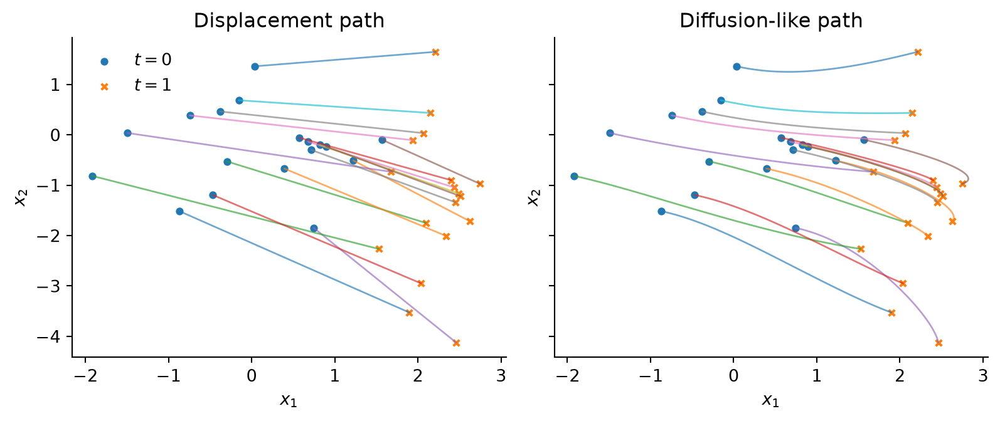
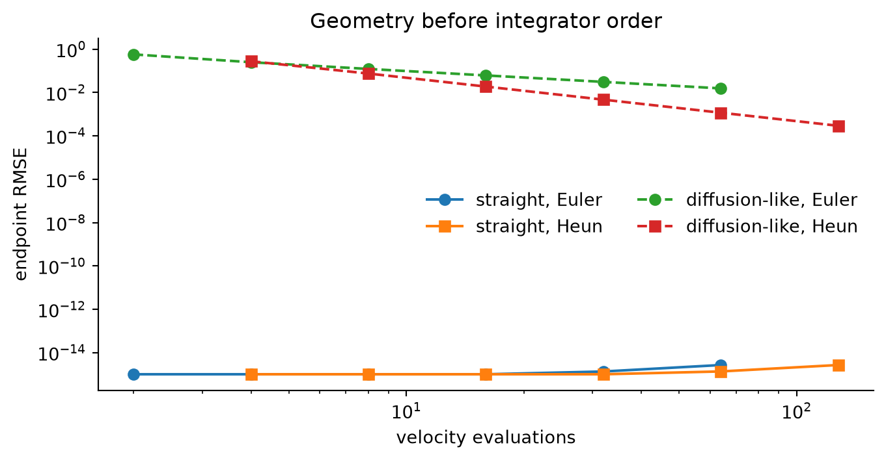

A geometric account of why probability paths can matter more than formal solver order in continuous-time generative models.
Author
Diego Filippo Marino
Published
August 14, 2026
A sampler does not merely solve an ODE. It solves the ODE that training chose for it.
This distinction is easy to lose in the taxonomy of diffusion schedules, score parameterizations, flow matching objectives, and numerical integrators. A high-order solver can reduce discretization error along a fixed path. It cannot make a needlessly curved path straight. Flow matching and rectified flow attack the geometry first. EDM and DPM-Solver show how much can still be gained by respecting the structure of the remaining dynamics.
This article studies a case where every quantity is analytic: transport between Gaussian distributions. The example is small, but it isolates the relationship among path geometry, velocity fields, and function-evaluation budgets.
One endpoint, many probability paths
Let p_0=\mathcal N(0,I) be a noise distribution and p_1=\mathcal N(\mu,\Sigma) be the data distribution. A continuous normalizing flow chooses intermediate densities p_t and a velocity field v_t satisfying the continuity equation
Many choices of p_t connect the same endpoints. They do not have the same computational difficulty.
Score-based diffusion starts from a stochastic noising process and obtains a deterministic probability-flow ODE with the same marginals (Song et al. 2021). DDPM is a discrete-time member of this family (Ho et al. 2020). Flow matching instead regresses a velocity field for a chosen path directly, without simulating an SDE (Lipman et al. 2023). Rectified flow begins with straight interpolants and learns the causal velocity induced by their crossings (Liu et al. 2023).
Two Gaussian paths
For diagonal \Sigma=\operatorname{diag}(\sigma_1^2,\ldots,\sigma_d^2), the 2-Wasserstein displacement path is
Both paths reach the same Gaussian. Only Equation 3 is straight in particle space.
import numpy as npimport matplotlib.pyplot as pltrng = np.random.default_rng(11)mu = np.array([2.2, -0.8])sigma = np.array([0.35, 1.8])z = rng.normal(size=(18, 2))t_grid = np.linspace(0, 1, 121)def alpha(t):return np.sin(np.pi * t /2)ot_paths = np.array([ t * mu + z * ((1- t) + t * sigma)for t in t_grid])diff_paths = np.array([ alpha(t) * mu + z * np.sqrt(alpha(t) **2* sigma**2+1- alpha(t) **2)for t in t_grid])fig, axes = plt.subplots(1, 2, figsize=(8.4, 3.6), sharex=True, sharey=True)for ax, paths, title inzip( axes, [ot_paths, diff_paths], ["Displacement path", "Diffusion-like path"],):for j inrange(z.shape[0]): ax.plot(paths[:, j, 0], paths[:, j, 1], alpha=0.65, lw=1) ax.scatter(paths[0, :, 0], paths[0, :, 1], s=13, label="$t=0$") ax.scatter(paths[-1, :, 0], paths[-1, :, 1], s=13, marker="x", label="$t=1$") ax.set(xlabel="$x_1$", ylabel="$x_2$", title=title) ax.spines[["top", "right"]].set_visible(False)axes[0].legend(frameon=False, loc="upper left")plt.tight_layout()plt.show()

Figure 1: Particle trajectories connecting the same Gaussian endpoints. Optimal-transport interpolation is straight; a variance-preserving diffusion-like path bends because each axis changes scale nonlinearly.
Curvature is a hidden compute bill
For a sampled trajectory x(t), define its path length and endpoint displacement as
Euler’s local truncation error is proportional to \ddot x(t)\Delta t^2. A path with large Equation 6 asks a coarse solver to approximate more bending per step.
Figure 2: Excess path length and acceleration energy for 2,000 particles. The straight displacement coupling removes geometric curvature before numerical integration begins.
The straight path has zero acceleration up to numerical differentiation error. This is not a claim that every optimal-transport marginal velocity remains straight after conditional averaging in a high-dimensional learned model. It is a controlled demonstration of the quantity that flow matching tries to improve.
Solver order and path design are different levers
Suppose a model has learned the exact affine field in Equation 5. We can integrate it with explicit Euler or Heun’s second-order method. For the displacement path, Euler is exact because the velocity is constant along each trajectory. For the curved path, solver error remains.
def velocity(x, t, kind):if kind =="ot": scale = (1- t) + t * sigmareturn mu + (sigma -1) * (x - t * mu) / scale a = alpha(t) adot = (np.pi /2) * np.cos(np.pi * t /2) variance = a**2* sigma**2+1- a**2 scale = np.sqrt(variance) scale_dot = a * adot * (sigma**2-1) / scale mean = a * mu mean_dot = adot * mureturn mean_dot + (x - mean) * (scale_dot / scale)def integrate(x0, steps, kind, method): x = x0.copy() dt =1/ stepsfor i inrange(steps): t = i * dt k1 = velocity(x, t, kind)if method =="euler": x = x + dt * k1else: proposal = x + dt * k1 k2 = velocity(proposal, t + dt, kind) x = x +0.5* dt * (k1 + k2)return xinitial = rng.normal(size=(4000, 2))target = mu + initial * sigmasteps_grid = np.array([2, 4, 8, 16, 32, 64])series = {}for kind in ["ot", "diffusion"]:for method in ["euler", "heun"]: errors = [] nfes = []for steps in steps_grid: estimate = integrate(initial, int(steps), kind, method) errors.append(np.sqrt(np.mean((estimate - target) **2))) nfes.append(steps * (1if method =="euler"else2)) series[(kind, method)] = (np.array(nfes), np.array(errors))fig, ax = plt.subplots(figsize=(7.2, 3.8))styles = { ("ot", "euler"): ("o-", "straight, Euler"), ("ot", "heun"): ("s-", "straight, Heun"), ("diffusion", "euler"): ("o--", "diffusion-like, Euler"), ("diffusion", "heun"): ("s--", "diffusion-like, Heun"),}for key, (style, label) in styles.items(): nfe, error = series[key] ax.loglog(nfe, np.maximum(error, 1e-15), style, label=label)ax.set(xlabel="velocity evaluations", ylabel="endpoint RMSE", title="Geometry before integrator order")ax.legend(frameon=False, ncol=2)ax.spines[["top", "right"]].set_visible(False)plt.tight_layout()plt.show()

Figure 3: Endpoint error versus neural-function evaluations for exact Gaussian velocity fields. A straight path is solved exactly by Euler, while higher-order integration only reduces error on the curved path.
Heun substantially improves the curved path. It has almost nothing to do on the straight one. Path design and integrator design multiply rather than substitute for each other.
Reading the modern methods through this lens
Score SDE and the probability-flow ODE
Score-based models learn \nabla_x\log p_t(x) and can sample either a reverse-time SDE or a deterministic probability-flow ODE (Song et al. 2021). This gives a clean separation between learned distributional information and the numerical sampler. It also exposes curvature, stiffness, and schedule choice as first-class concerns.
Flow matching
Flow matching trains v_\theta(x,t) by regression against a conditional vector field:
The conditional objective has the same gradient as the intractable marginal flow-matching objective under the paper’s conditions (Lipman et al. 2023). Choosing conditional optimal-transport paths makes Equation 7 both tractable and geometrically favorable.
Rectified flow
Rectified flow fits the velocity of linear interpolants X_t=(1-t)X_0+tX_1. Interpolants can cross, while unique ODE trajectories cannot. Conditional expectation resolves those crossings into a causal flow. Reflow repeats the procedure on the learned coupling and tends to straighten it further (Liu et al. 2023). The key target is not merely a better score estimate. It is a coupling that tolerates coarse time discretization.
EDM and DPM-Solver
EDM separates schedule, preconditioning, training weights, and solver choice. Its deterministic sampler uses Heun steps and a noise schedule designed around where truncation error matters (Karras et al. 2022). DPM-Solver goes further by exploiting the semilinear form of diffusion ODEs. It solves the linear part analytically and approximates only the neural residual through an exponential-integrator construction (Lu et al. 2022).
These methods improve the solver side of the equation. They are especially valuable when retraining with a different path is impossible.
Consistency models
Consistency models learn a map from any point on a probability-flow trajectory to its endpoint (Song et al. 2023). In the ideal case, the model amortizes the whole ODE solve into one evaluation. Distillation error, trajectory complexity, and boundary parameterization then replace ordinary integration error. A straighter teacher trajectory is still easier to compress.
A useful error decomposition
For a generated endpoint \hat x_1, it helps to separate
The terms interact, so this is not a theorem. It is a debugging discipline. Increasing solver order only targets the last term. More network capacity mainly targets the first. Flow matching and rectification can reduce the middle term.
Limits of the Gaussian experiment
The analytic coupling knows which noise sample maps to which data sample. In unconditional image generation there is no given pairing, and conditional vector fields are averaged into a marginal field. Straight conditional paths can still yield curved marginal trajectories. High-dimensional learned fields can also be stiff for reasons that a Gaussian cannot express.
The experiment nevertheless establishes a narrow result: endpoint distributions do not determine sampling cost. The geometry of the chosen probability path contributes directly to the numerical budget. Before designing a more elaborate solver, it is worth asking whether the model was trained to follow an unnecessarily difficult road.
References
Ho, Jonathan, Ajay Jain, and Pieter Abbeel. 2020. “Denoising Diffusion Probabilistic Models.”Advances in Neural Information Processing Systems. https://arxiv.org/abs/2006.11239.
Karras, Tero, Miika Aittala, Timo Aila, and Samuli Laine. 2022. “Elucidating the Design Space of Diffusion-Based Generative Models.”Advances in Neural Information Processing Systems. https://arxiv.org/abs/2206.00364.
Lipman, Yaron, Ricky T. Q. Chen, Heli Ben-Hamu, Maximilian Nickel, and Matt Le. 2023. “Flow Matching for Generative Modeling.”International Conference on Learning Representations. https://arxiv.org/abs/2210.02747.
Liu, Xingchao, Chengyue Gong, and Qiang Liu. 2023. “Flow Straight and Fast: Learning to Generate and Transfer Data with Rectified Flow.”International Conference on Learning Representations. https://arxiv.org/abs/2209.03003.
Lu, Cheng, Yuhao Zhou, Fan Bao, Jianfei Chen, Chongxuan Li, and Jun Zhu. 2022. “DPM-Solver: A Fast ODE Solver for Diffusion Probabilistic Model Sampling in Around 10 Steps.”Advances in Neural Information Processing Systems. https://arxiv.org/abs/2206.00927.
Song, Yang, Prafulla Dhariwal, Mark Chen, and Ilya Sutskever. 2023. “Consistency Models.”Proceedings of the 40th International Conference on Machine Learning. https://arxiv.org/abs/2303.01469.
Song, Yang, Jascha Sohl-Dickstein, Diederik P. Kingma, Abhishek Kumar, Stefano Ermon, and Ben Poole. 2021. “Score-Based Generative Modeling Through Stochastic Differential Equations.”International Conference on Learning Representations. https://arxiv.org/abs/2011.13456.
Citation
BibTeX citation:
@online{marino2026,
author = {Marino, Diego Filippo},
title = {Straight {Paths,} {Cheap} {Samplers}},
date = {2026-08-14},
url = {https://diegofilippomarino.github.io/Eigenholm/posts/straight-paths-cheap-samplers/},
langid = {en}
}